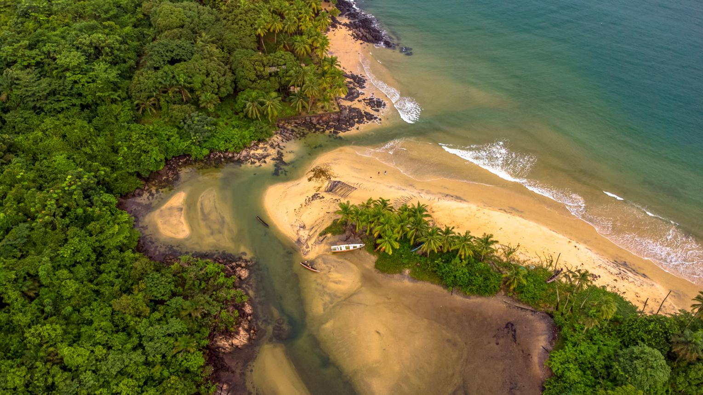

Practical things to keep in mind
"Practical things to keeping in mind when visiting Sierra Leone and general facts about the population."
Arrival in Sierra Leone
Visitors arriving in Sierra Leone usually enter through Freetown International Airport (Lungi International Airport). Transport services are available between the airport and Freetown, including water taxis, ferries, and private transfers. The journey across the bay offers beautiful views of the coastline and takes approximately 30–60 minutes depending on the service chosen. Taxis and private vehicles are also available for travel within Freetown and other parts of the country. Visitors are encouraged to arrange transportation in advance for a comfortable arrival experience.

LANGUAGE
Krio is the lingua franca and most widely spoken language. English is the official national language. The third most commonly taught language in schools is French.
MONEY & COSTS
The official currency is the Sierra Leonean Leone (SLE). Cash is widely used, especially outside major hotels and restaurants in Freetown. ATMs are available in Freetown but can be unreliable. Credit cards are accepted only at high-end hotels. Bring USD or EUR to exchange, and carry small bills for taxis and markets.
HEALTH & SAFETY
A Yellow Fever vaccination certificate is required for entry. Malaria prevention is strongly advised. Drink bottled or filtered water only. Tap water is not safe. For safety, avoid walking alone at night and keep valuables secure. Register with your embassy if staying long term.
LOCAL CUSTOMS
Sierra Leoneans are known for being warm and welcoming. Greetings are important - a handshake and asking "How de body?" is common. Dress modestly, especially outside Freetown and when visiting religious sites. Always ask permission before taking photos of people.
Transport Map Overview
Sierra Leone's main international gateway is Lungi International Airport (FNA), located across the Sierra Leone River from Freetown. Travelers can reach the capital by ferry in approximately 30–40 minutes or by helicopter in about 10 minutes. The country's road network consists mainly of paved (tarred) roads in and around Freetown, while some rural areas are connected by gravel roads. Inter-city buses provide affordable transport between major towns, and ferries remain an important means of travel for coastal communities and nearby islands.
Note: Power outages can occur. Many hotels and businesses use generators. A universal adapter for Type D and G plugs is recommended.
Sierra Leone National Anthem

The national anthem of Sierra Leone is called "High We Exalt Thee, Realm of the Free". It was adopted in 1961 when Sierra Leone gained independence. The anthem expresses the nation's pride, freedom, unity, and hope for the future.
The lyrics were written by Clifford Nelson Fyle, and the music was composed by John Joseph Akar.